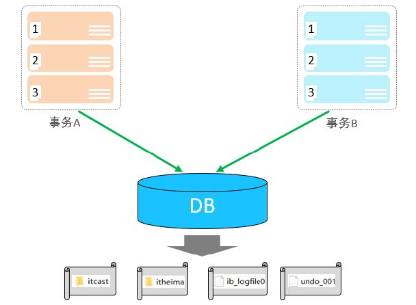
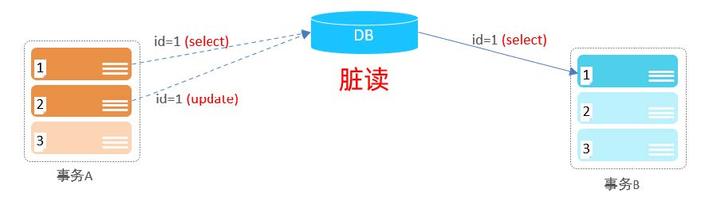
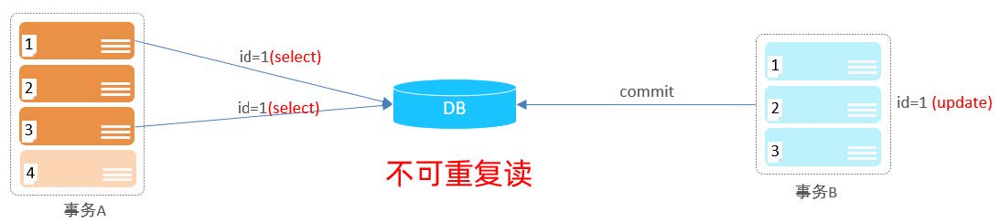
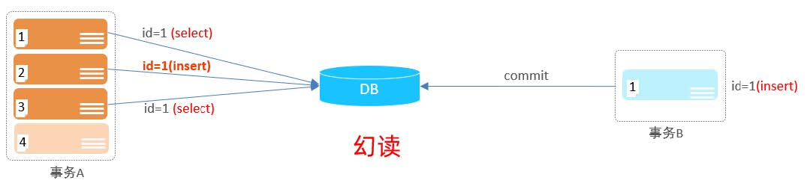
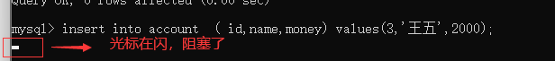

事务的介绍
什么是事物：事务是一组操作的集合，它是一个不可分割的工作单位，事务会把所有的操作作为一个整体一起向系统提交或撤销操作请求，即这些操作要么同时成功，要么同时失败。
事务的执行步骤
准备数据
-- 选择数据库
mysql> use temp
-- 准备数据
drop table if exists account;
create table account(
id int primary key AUTO_INCREMENT comment 'ID',
name varchar(10) comment '姓名',
money double(10,2) comment '余额'
) comment '账户表';
insert into account(name, money) VALUES ('张三',2000), ('李四',2000);
-- 查看数据
mysql> select * from account;
+----+------+---------+
| id | name | money |
+----+------+---------+
| 1 | 张三 | 2000.00 |
| 2 | 李四 | 2000.00 |
+----+------+---------+
2 rows in set (0.00 sec)
未控制事务
-- 测试正常情况
-- 1. 查询张三余额
select * from account where name = '张三';
-- 2. 张三的余额减少1000
update account set money = money - 1000 where name = '张三';
-- 3. 李四的余额增加1000
update account set money = money + 1000 where name = '李四';
mysql> select * from account;
+----+------+---------+
| id | name | money |
+----+------+---------+
| 1 | 张三 | 1000.00 |
| 2 | 李四 | 3000.00 |
+----+------+---------+
2 rows in set (0.00 sec)
#########################################################################################3
-- 测试异常情况
-- 1. 查询张三余额
select * from account where name = '张三';
-- 2. 张三的余额减少1000
update account set money = money - 1000 where name = '张三';
出错了....
-- 3. 李四的余额增加1000
update account set money = money + 1000 where name = '李四';
mysql> select * from account;
+----+------+---------+
| id | name | money |
+----+------+---------+
| 1 | 张三 | 1000.00 |
| 2 | 李四 | 2000.00 |
+----+------+---------+
2 rows in set (0.00 sec)
控制事务一：改配置
在Mysql中，事务的提交方式为默认提交，也就是说，没执行一条sql指令，就提交一次事务
我们可以修改事务的提交方式
-- 查看事务的提交方式
SELECT @@autocommit ;
-- 设置事务提交方式 ：0表示off，1表示on
-- 设置为0 表示sql不会自动提交
SET @@autocommit = 0 ;
不会自动提交的效果：
-- 执行下面命令
update account set money = money - 1000 where name = '张三';
-- 换一个客户端查看，发现表并没有改变（记住，记住，记住，要换一个客户端）
mysql> select * from account;
+----+------+---------+
| id | name | money |
+----+------+---------+
| 1 | 张三 | 2000.00 |
| 2 | 李四 | 2000.00 |
+----+------+---------+
2 rows in set (0.00 sec)
-- 执行commit，提交事务
COMMIT;
-- 发现数据变了
mysql> select * from account;
+----+------+---------+
| id | name | money |
+----+------+---------+
| 1 | 张三 | 1000.00 |
| 2 | 李四 | 2000.00 |
+----+------+---------+
2 rows in set (0.00 sec)
-- 回滚事务 ROLLBACK;
控制事务二：手动开启事务
-- 开启事务, 也可以用BEGIN
start transaction
-- 1. 查询张三余额
select * from account where name = '张三';
-- 2. 张三的余额减少1000
update account set money = money - 1000 where name = '张三';
-- 3. 李四的余额增加1000
update account set money = money + 1000 where name = '李四';
-- 如果正常执行完毕, 则提交事务
commit;
-- 如果执行过程中报错, 则回滚事务
-- rollback;
BEGIN 和 START TRANSACTION 在 MySQL 中都用于开启一个新的事务，两者在功能上没有区别。在某些情况下，如果 BEGIN 与 SQL 语句中的其他关键字冲突，可以使用 START TRANSACTION 作为替代。
事务四大特性
原子性（Atomicity）：事务是不可分割的最小操作单元，要么全部成功，要么全部失败。
一致性（Consistency）：事务完成时，必须使所有的数据都保持一致状态。比如说，上面的这个例子中，张三给李四转钱，如果转账成功，那么张三1000，李四3000；如果转账失败，张三2000，李四2000，这个数据，总体是4000，这个是不变的。
隔离性（Isolation）：数据库系统提供的隔离机制，保证事务在不受外部并发操作影响的独立环境下运行。
在并发状态下，事务A的操作不会影响事务B的操作。
持久性（Durability）：事务一旦提交或回滚，它对数据库中的数据的改变就是永久的。
事务的并发问题
赃读：一个事务读到另外一个事务还没有提交的数据。如比如B读取到了A未提交的数据。
不可重复读：一个事务先后读取同一条记录，但两次读取的数据不同，称之为不可重复读。
事务A操作第一次查询，得到结果select1，
接着，事务B对id=1的数据进行了修改操作，并且提交
之后，事务B再查询，得到结果select2
这个时候，select1和select2的结果就会不一致
注意：两次查询是在同一个事物下。
幻读：一个事务按照条件查询数据时，没有对应的数据行，但是在插入数据时，又发现这行数据已经存在，好像出现了 “幻影”。
- 事务A：查数据库id为1的数据，查到没有
- 事务B：向数据库里面插入一条id为1的数据，并且提交
- 事务A：向数据库插入一条id为1的数据，这个时候由于主键冲突而无法插入，因为食物B已经插入了
- 事务A：又查询一次id为1的数据，发现数据库里面是没有id为1的数据的，因为已经解决了不可重复读的问题
- 事务A：感觉出现了幻觉
事务的隔离级别
| 级别 | 名字 | 脏读 | 不可重复读 | 幻读 | 数据库默认隔离级别 |
|---|---|---|---|---|---|
| 1 | 读未提交 | 是 | 是 | 是 | |
| 2 | 读已提交 | 否 | 是 | 是 | Oracle |
| 3 | 可重复读 | 否 | 否 | 是 | MySQL |
| 4 | 串行化 | 否 | 否 | 否 | 最高的隔离级别 |
设置事务的隔离级别
-- 查看事务的隔离级别
mysql> SELECT @@TRANSACTION_ISOLATION;
+-------------------------+
| @@TRANSACTION_ISOLATION |
+-------------------------+
| REPEATABLE-READ |
+-------------------------+
1 row in set (0.00 sec)
-- 设置事务的隔离级别
-- SET [ SESSION | GLOBAL ] TRANSACTION ISOLATION LEVEL
-- SESSION 表示只作用在当前会话 GLOBAL 表示作用全局
-- LEVEL 有这四个选项 :READ UNCOMMITTED |READ COMMITTED | REPEATABLE READ | SERIALIZABLE
READ UNCOMMITTED
开启两个会话窗口，把两个会话的隔离级别设置为 READ UNCOMMITTED
mysql> SET SESSION TRANSACTION ISOLATION LEVEL READ UNCOMMITTED; Query OK, 0 rows affected (0.00 sec)原表的的数据
mysql> select * from account; +----+------+---------+ | id | name | money | +----+------+---------+ | 1 | 张三 | 2000.00 | | 2 | 李四 | 2000.00 | +----+------+---------+ 2 rows in set (0.00 sec)两个窗口开启事务
mysql> start transaction; Query OK, 0 rows affected (0.00 sec)窗口2修改
mysql> update account set money = money - 1000 where name = '张三'; Query OK, 1 row affected (0.01 sec) Rows matched: 1 Changed: 1 Warnings: 0窗口1查询，发现已经读取到到了窗口2未提交的数据
mysql> select * from account where name = '张三'; +----+------+---------+ | id | name | money | +----+------+---------+ | 1 | 张三 | 1000.00 | +----+------+---------+ 1 row in set (0.00 sec)
READ COMMITTED
开启两个会话窗口，把两个会话的隔离级别设置为 READ COMMITTED
mysql> SET SESSION TRANSACTION ISOLATION LEVEL READ COMMITTED; Query OK, 0 rows affected (0.00 sec)两个窗口开启事务
mysql> start transaction; Query OK, 0 rows affected (0.00 sec)窗口2修改
mysql> update account set money = money - 1000 where name = '张三'; Query OK, 1 row affected (0.02 sec) Rows matched: 1 Changed: 1 Warnings: 0窗口1查看：数据没变
mysql> select * from account where name = '张三'; +----+------+---------+ | id | name | money | +----+------+---------+ | 1 | 张三 | 2000.00 | +----+------+---------+ 1 row in set (0.00 sec)窗口2提交事务
mysql> COMMIT; Query OK, 0 rows affected (0.00 sec)窗口1再次查看，发现数据变化了
mysql> select * from account where name = '张三'; +----+------+---------+ | id | name | money | +----+------+---------+ | 1 | 张三 | 1000.00 | +----+------+---------+ 1 row in set (0.00 sec)这个就产生问题了：在同一个事务中，查询同一个数据，两次结果不一样
REPEATABLE READ
开启两个会话窗口，把两个会话的隔离级别设置为 REPEATABLE READ
mysql> SET SESSION TRANSACTION ISOLATION LEVEL REPEATABLE READ; Query OK, 0 rows affected (0.00 sec)两个窗口开启事务
mysql> start transaction; Query OK, 0 rows affected (0.00 sec)窗口1查询修改前的数据
mysql> select * from account; +----+------+---------+ | id | name | money | +----+------+---------+ | 1 | 张三 | 2000.00 | | 2 | 李四 | 2000.00 | +----+------+---------+ 2 rows in set (0.02 sec)窗口2修改数据
mysql> update account set money = money - 1000 where name = '张三'; Query OK, 1 row affected (0.02 sec) Rows matched: 1 Changed: 1 Warnings: 0查看数据，没有变，解决了脏读问题
mysql> select * from account; +----+------+---------+ | id | name | money | +----+------+---------+ | 1 | 张三 | 2000.00 | | 2 | 李四 | 2000.00 | +----+------+---------+ 2 rows in set (0.00 sec)窗口2提交
mysql> commit; Query OK, 0 rows affected (0.02 sec)窗口1查询：数据没有变，解决不可重复读的问题
mysql> select * from account; +----+------+---------+ | id | name | money | +----+------+---------+ | 1 | 张三 | 2000.00 | | 2 | 李四 | 2000.00 | +----+------+---------+ 2 rows in set (0.00 sec)窗口1提交事务，再 查询，数据才变
mysql> commit; Query OK, 0 rows affected (0.00 sec) mysql> select * from account; +----+------+---------+ | id | name | money | +----+------+---------+ | 1 | 张三 | 1000.00 | | 2 | 李四 | 2000.00 | +----+------+---------+ 2 rows in set (0.00 sec)
幻读问题演示
展示原始数据
mysql> select * from account; +----+------+---------+ | id | name | money | +----+------+---------+ | 1 | 张三 | 2000.00 | | 2 | 李四 | 2000.00 | +----+------+---------+ 2 rows in set (0.02 sec)两窗口开启事务
mysql> start transaction; Query OK, 0 rows affected (0.00 sec)窗口1查询id为3的数据，数据库里面没有
mysql> select * from account where id ='3'; Empty set (0.00 sec)窗口2插入一条id为3的数据，并提交
mysql> insert into account ( id,name,money) values(3,'王五',2000); Query OK, 1 row affected (0.02 sec) mysql> commit; Query OK, 0 rows affected (0.02 sec)这个时候窗口1由于主键冲突就无法插入了
mysql> insert into account ( id,name,money) values(3,'王五2',2000); ERROR 1062 (23000): Duplicate entry '3' for key 'account.PRIMARY'再次查询，也没有数据，这就出现幻读的问题
mysql> select * from account where id ='3'; Empty set (0.00 sec)
SERIALIZABLE
开启两个会话窗口，把两个会话的隔离级别设置为 SERIALIZABLE
mysql> SET SESSION TRANSACTION ISOLATION LEVEL SERIALIZABLE; Query OK, 0 rows affected (0.00 sec)查看原始数据
mysql> select * from account; +----+------+---------+ | id | name | money | +----+------+---------+ | 1 | 张三 | 2000.00 | | 2 | 李四 | 2000.00 | +----+------+---------+ 2 rows in set (0.00 sec)窗口1开启事务，然后窗口2再开启事务（和事务开启的顺序无关）
mysql> start transaction; Query OK, 0 rows affected (0.00 sec)窗口1查询id为3的数据，数据库里面没有
mysql> select * from account where id ='3'; Empty set (0.00 sec)窗口2想插入一条id为3 的数据，但是阻塞了
超时，会提示以下错误
mysql> insert into account ( id,name,money) values(3,'王五',2000); ERROR 1205 (HY000): Lock wait timeout exceeded; try restarting transaction窗口1在插入，插入成功
mysql> insert into account ( id,name,money) values(3,'王五',2000); Query OK, 1 row affected (0.00 sec)这个时候窗口2还想插入，仍然无法插入，被阻塞
mysql> insert into account ( id,name,money) values(3,'王五',2000); ERROR 1205 (HY000): Lock wait timeout exceeded; try restarting transaction窗口1提交事务，插入成功
mysql> commit; Query OK, 0 rows affected (0.02 sec)
SERIALIZABLE为什么可以杜绝幻读
这是因为InnoDB会自动加锁以确保事务的安全性，但是这会导致性能较低
-- 当窗口1执行如下语句时
select * from account where id ='3';
-- InnoDB 会隐式地对 id='3'的数据 加 X锁
-- 这个时候，如果窗口2，想要插入 id=‘3’的数据时，就会被阻塞
mysql> insert into account ( id,name,money) values(3,'王五',2000);
ERROR 1205 (HY000): Lock wait timeout exceeded; try restarting transaction
-- 但是如果窗口2 想要新增 id=4 的数据，是可以成功的
mysql> insert into account ( id,name,money) values(4,'王五2',2000);
Query OK, 1 row affected (0.02 sec)
转载请注明来源，欢迎对文章中的引用来源进行考证，欢迎指出任何有错误或不够清晰的表达。可以在下面评论区评论，也可以邮件至 1909773034@qq.com